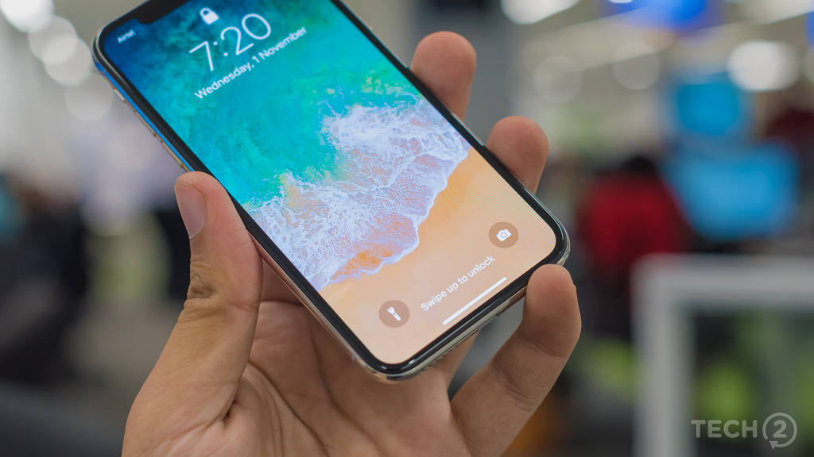

4 cách để hạn chế hiện tượng "Burn-in" (lưu ảnh/bóng mờ) trên iPhone X?

iPhone X là chiếc iPhone đầu tiên sở hữu màn hình OLED nên sẽ không thế tránh khỏi đặc tính của chiếc màn hình này mặc dù Apple tuyên bố hãng đã thiết kế để giảm thiểu vấn đề này.
Apple cảnh báo màn hình của iPhone X có khả năng bị burn-in (lưu ảnh/bóng mờ)
Để hạn chế viện màn hình iPhone X lưu ảnh thì bạn có thể thực hiện những điều sau:
1. Sử dụng phần mềm iOS mới nhất
Các bản update phần mềm của Apple sẽ hạn chế tối đa cho việc hạn chế hiện tượng lưu ảnh trên iPhone X vì vậy hãy thường xuyên update iOS nhé!
2. Bật độ sáng tự động
Trên iOS 11 thì Apple đã tự động kích hoạt độ sáng tự động để hạn chế hiện tượng "Burn-in" và hãng cũng đã "dấu" khá kỹ tùy chọn này trong phần Trợ năng thay vì để ngay ở phần màn hình như trên các phiên bản trước.
3. Giảm thời gian tự khóa màn hình
iPhone X được cài đặt sẵn khoảng thời gian khóa tự động màn hình dưới 30s và đây cũng là 1 cách khá hữu ích để hạn chế việc lưu ảnh. Nó có vẻ khá thấp nhưng với iPhone X cùng cụm camera TrueDepth thì khi bạn nhìn vào iPhone thì máy sẽ tự động giữ màn hình không khóa.
4. Không sử dụng độ sáng tối đa trong thời gian dài
Việc sử dụng độ sáng tối đa trên iPhone X là một trong những nguyên nhân hàng đầu khiến máy xảy ra hiện tượng "Burn-in". Vì vậy bạn nên hạn chế để độ sáng của máy ở mức tối đa trong thời gian dài.
Nếu iPhone X của bạn bị hiện tượng lưu ảnh rồi thì làm thế nào?
Nếu chẳng may chiếc iPhone của bạn bị lưu ảnh thì đừng lo lắng, hãy tắt iPhone của bạn trong vài giờ, sau đó khởi động lại thiết bị lúc đó việc lưu ảnh sẽ biến mất. Nếu iPhone của bạn vẫn không giải quyết được vấn đề thì bạn nên nghĩ đến việc đem đến trung tâm bảo hành để thay thế 1 màn hình mới.
Bạn đánh giá thế nào về màn hình của iPhone X? Chiếc iPhone X bạn đang sử dụng có thường xuyên gặp phải hiện tượng "Burn-in" hay không?